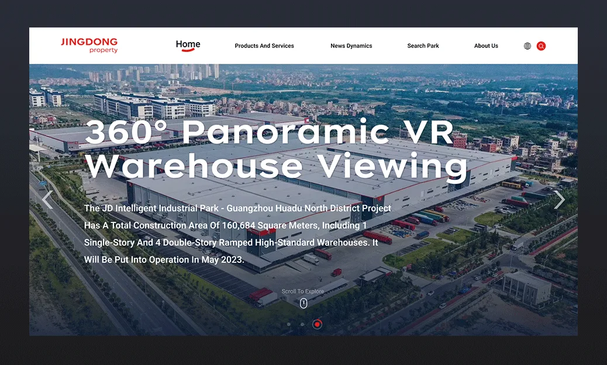
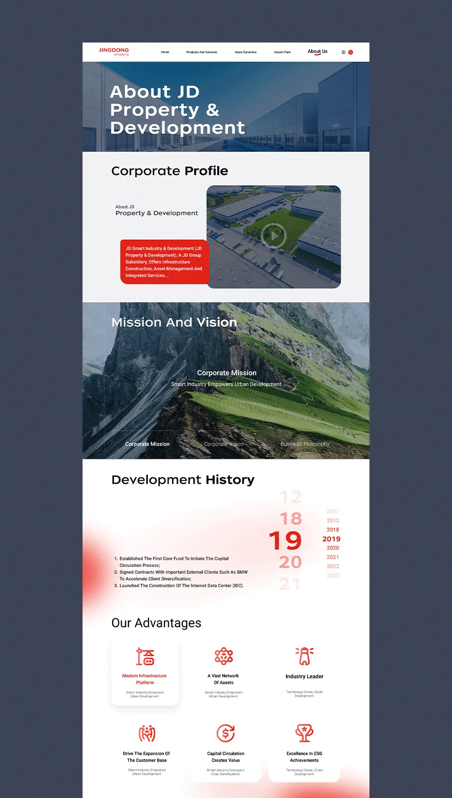
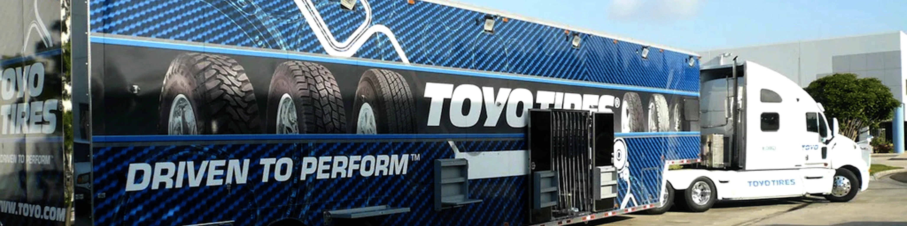

↑
JCY
Projects
About
Contact
JDP 国际官网
类型
行业
年份
Visit site
Web
仓储
2025-2026
JDP 国际版官网以 “Global Vision・Professional Trust・Digital Experience”（全球视野・专业信赖・数字体验） 为核心设计理念，面向全球客户、合作伙伴与行业受众，打造一套简洁、现代、高识别度、跨文化友好的品牌官网体系。设计兼顾国际审美趋势与品牌基因一致性，在极简克制的视觉语言中传递专业、可靠、创新的品牌气质。

我在职期间加入 JDP 项目，担任团队 UX 设计师，主导 JDP 国际官网整体用户体验设计； 设计以简约现代的编辑美学为基底，打造视觉质感高级的全球化 官方网站，精准传递 JDP 业务全球布局、专业靠谱与国际化服务的品牌内核。
整体 UI 设计兼具国际商务质感、专业产业调性与现代极简美学，既彰显京东产发全球化企业实力，又以高级简约视觉塑造国际化品牌形象，适配海外商务受众浏览与品牌传播需求。

TOYO TRIES 仓储与增值服务小程序
Next project

I partner with brands and studios that care about clarity, craft and a point of view. Let’s talk.
jcy9421@gmail.com
JAY CELLE YU
Frontend Creative Designer
Social
Linkedin
Github
Pages
Projects
About
Contact
Contact
+8613180777220
jcy9421@gmail.com
© 2026
All rights reserved
Back to top